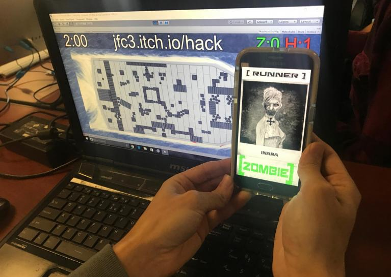

Role: Artist, Designer
This project was for a 3-day game jam (the theme being "waves") and used a particular API for unity that allowed anyone with the a given url to interact with the Unity application. This allowed for a design that was open to the possibility of not only very high accessibility, but also no upper limit on the scaling for the number of players.
Concept
The idea was spawned from a brainstorming process given to us by a group member from
Blizzard. We rapid-fired ideas on post-its until we had about exhausted them, broke for
lunch, and then processed the ideas. We took our favorite ideas and then selected a base
idea and merged good elements from other ideas. What emerged was a game where players
connected to the game through the API and controlled either a zombie or a human. Zombies infect,
humans hold out until the time limit. How did we incorporate the theme? They're all on
a boat and waves occasionally wash onboard, pushing both players and objects.
The game turned out to be loads of fun, in the live demo we were able to get around
20 people into a game. You can see a few examples of what it all looked like below.
I pulled them from the official game jam entry page where you can also download the
executable and access the GitHub:
http://globalgamejam.org/2017/games/zomboat

Emergent Gameplay and Evolving Design
Sometimes you don't know exactly what your design will bring, and that's what
playtesting is for. In Zomboat, the implementation of the game as well as the
visual style led to an emerging style of gameplay which led to an iteration of
map design that addressed all of these factors.
In prototyping the game we gave both players and objects
physics attributes. This let players, human and zombie alike move objects to shift
the field in their favor, and also sometimes take an unfortunate turn. Players could
form hiding spots for themselves, but also trap themselves. When we added waves to the
occasion, that pushed with much larger force over a greater area, they changed the field of
play greatly every time they occured. We found that waves could break open stalemates and
often change the outcome of a scenario.
For the visual style of the game, we realized that players would all be staring
at a single screen while interfacing from their phones. The environment could not get
in the way of finding your own player. The environment, the boat, the objects are all
a shade of greyscale. Thus zombies stood out. However, as a circumstance of the human
sprite we had pulled, the human sprites did not stand out. What
this led to was players hiding statically in groups of objects trying their best
not to draw attention to themselves.
After we had observed how the gameplay in zomboat had evolved in response to
how our game was implemented and designed, we shaped the map design accordingly:
Note that the spawn points we placed would not start any players inside any of the closed off
spaces. The implications of the map mean that as the game progresses, inevitably, waves will
break open these rooms giving way for players to play around them. Players themselves can
push through them as well, but taking much more time and can't be done while on the run.
There are a few clusters of barrels next to which players can stand still, trying their
best to blend in with them. We designed the waves to spawn more and more frequently by the
end of the time limit. The end result is a map that is slowly changing, unpredictably
with each playthrough, and as the time limit comes to an end, the map itself creates factors
that can quickly shift the tide back and forth, and reflects the tension that comes with trying
to survive right until the end.
 Another small detail to take note of is that, once humans are touched by zombies once,
they bleed indefinitely (unless they find a way to heal some HP) so hiding becomes
nearly impossible. Thus, getting away with a scratch is fairly punishing and
takes away a players ability to hide. And finally, transforming into a zombie also
visually stands out, letting both the involved players, but also everyone else on the
map know that another threat is now on the field.
Another small detail to take note of is that, once humans are touched by zombies once,
they bleed indefinitely (unless they find a way to heal some HP) so hiding becomes
nearly impossible. Thus, getting away with a scratch is fairly punishing and
takes away a players ability to hide. And finally, transforming into a zombie also
visually stands out, letting both the involved players, but also everyone else on the
map know that another threat is now on the field.
Conclusion
The quick-paced nature of the game jam along with an experienced team allowed us to see, concentrated within a very small time frame how design evolves according to the choices that were previously made, based on how playstyle emerges to deal with it. The game was tons of fun to make, test and play, and to top it off it was a unique kind of game that I'm glad to have been a part of.